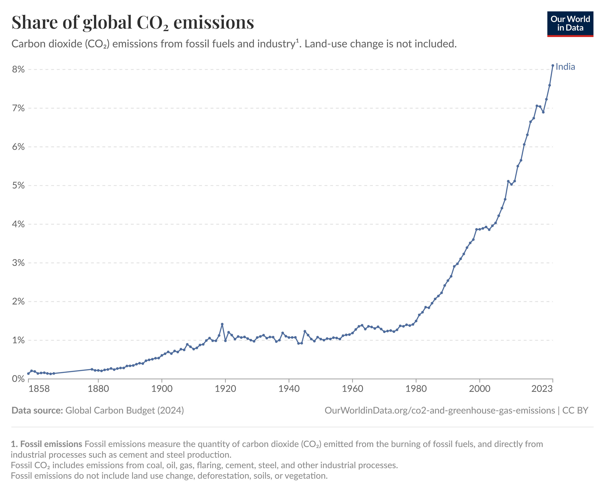
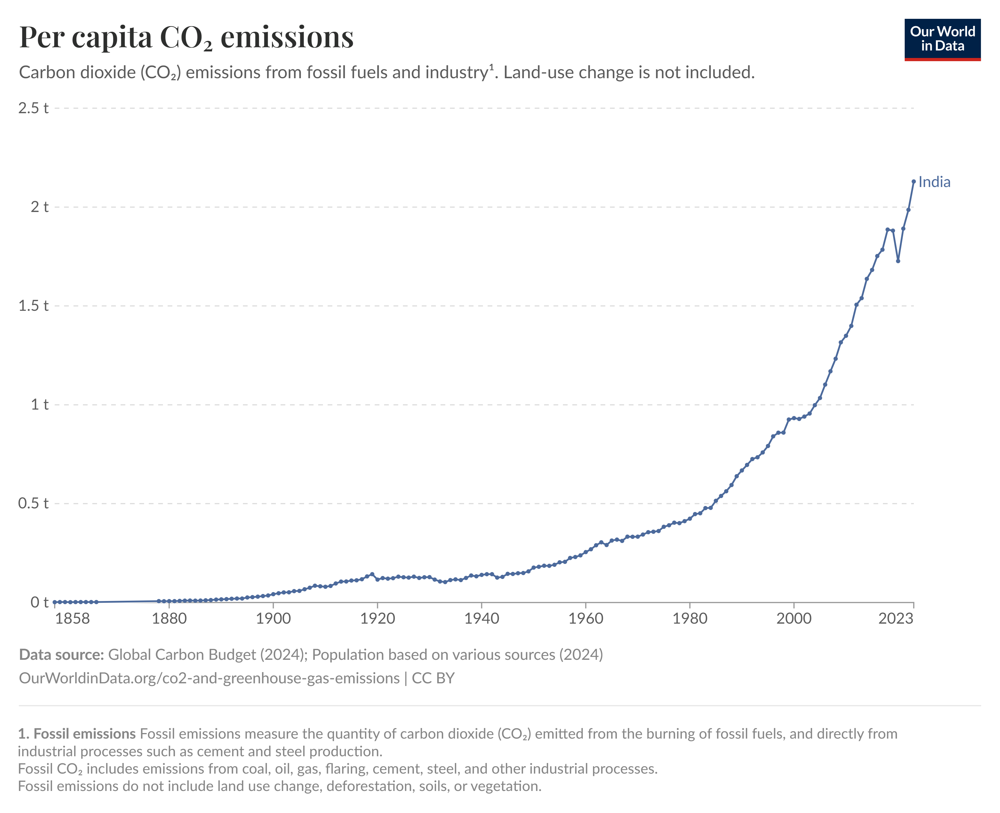

India: What share of global CO2 emissions are emitted by the country?

Looking at a country’s annual emissions is useful, but it can be hard to put these numbers in context of the
global total. Is 10 million tonnes of CO2 large or small; what about 100 million; or 1 billion tonnes?
This
interactive chart shows annual emissions as a percentage of the global total in a given year.
Annual emissions figures are often used to compare countries’ contribution to climate change. But this
metric often reflects differences in population size across the world.
These figures look specifically
at CO2 emissions – not total greenhouse gas emissions. You find total, and other greenhouse gas emissions,
later in this country profile.
Annual emissions can be largely influenced by population size – we
present the per capita figures above.
Per capita: how much CO2 does the average person emit?

These figures are based on ‘production’ or ‘territorial’ emissions (i.e. emissions from the burning of fossil
fuels, or cement production within a country’s borders). It does not consider the emissions of traded goods
(consumption-based emissions). You find consumption-based emissions later in this country profile.
These
figures look specifically at CO2 emissions – not total greenhouse gas emissions. You find total, and other
greenhouse gas emissions, later in this country profile.
Annual emissions can be largely influenced by
population size – we present the per capita figures above.